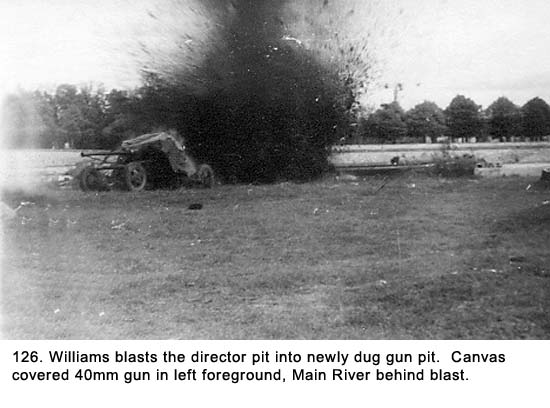
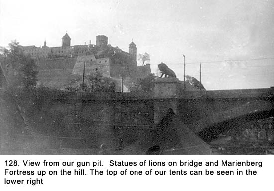
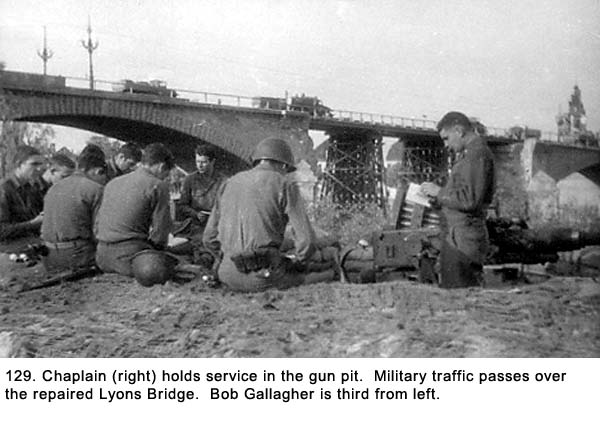
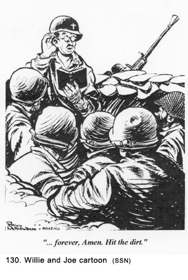
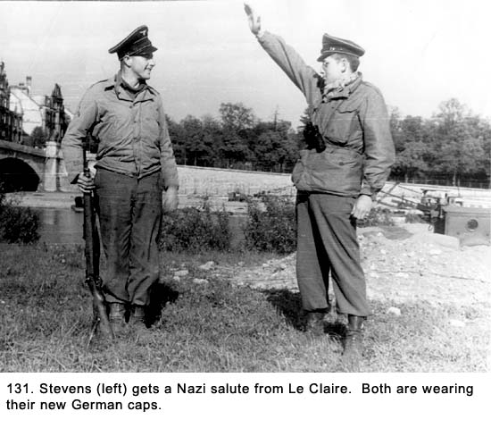
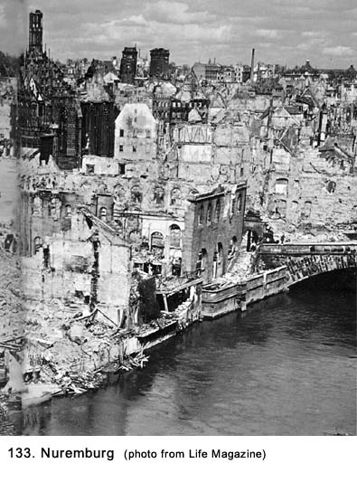

|
Table of Contents < - - - return Chapter 22 < - - - next
World War II Story by Robert F. Gallagher Chapter 21 - Wurzburg, Germany No man is worth his salt who is not
ready at all times to risk his body, to risk his well-being, to risk his
life in a great cause. ______________________
After a long trip by convoy, we entered another heavily bombed city on April
24th. The depressing look of the landscape, being jostled around on the
truck during the long ride from our last destination, a lack of meaningful
sleep, and the miserable rations all contributed to a wretched state of
mind. Everyone was in a bad mood, and the unpleasant situation we were
about to experience would be the fuse that would light a near riot among our
crewmembers. We pulled down a ramp from the street to the bank of the Main
River in the city of Wurzburg. Wurzburg was a city of considerable
historical value but of little military importance. Most of the cities of
military significance had already been reduced to rubble by the Allied
Airforce. Wurzburg was bombed, as described by a German citizen,
"Because it was there and it was better than bombing
nothing". Like in Frankfurt, this site was right in
the middle of a large urban area. Before it got dark, we pitched our two
pyramid tents near the ramp. We knew there was no chance of finding a
permanent structure nearby to use for our billet because the buildings in
our area were so heavily damaged. In fact, those near our position were
nothing more than piles of rubble. The Germans called Wurzburg, "The
grave on the river Main".  Digging in that night was extremely difficult because the ground was hard clay that could not be shoveled out. We had to use long-handled axes to loosen it and then move on to the shovels. We worked all night, and by dawn we were completely worn out. The 40mm gun was still up on the ground because we had decided the gun pit still needed some work, maybe a lot of work. It was poorly shaped, it wasn’t deep enough, and its footprint was too small. We were debating what to do to get by with the least amount of additional work. Ordinarily, we could have built up the shallow pit with more than the usual number of sandbags, but here we had fewer sandbags. The chunks of earth we had dug out did not nest well in the bags. We were all discouraged, tired, and more than a little ornery. Dillon was trying to push us to complete the work, but even he did not have his heart in it. There was another factor weighing on us and that was the thought of digging the director pit. The director was a separate instrument that could be used to track planes and it replaced the hand cranks on the gun proper. We hated the director because it was not as accurate as the gun sights, especially after being bounced around on the back of a truck for a long period of time; it took too long to pick up a target, making it useless with low-flying aircraft that were visible only for a few seconds; it was a lot of work unloading and loading from the truck; and of immediate concern, it required a special pit of its own, which meant more digging. The officers in our battery were always after us to use the director. The question was, use it on what? We had not seen an enemy plane in weeks and were beginning to wonder if the Luftwaffe was a thing of the past. We set it up at all our previous gun pits, but we never used it. We thought this would be a good time to leave it on the truck where it belonged. But we knew the first thing the brass would notice if they came around for an inspection was the missing director, so we decided we had better put it in place again, even though we had no intentions of using it. This meant digging another pit about eight feet in diameter and about four feet deep next to the gun pit. We debated whether we should complete the gun pit first or start on the director pit in order to complete them at the same time. TNT In The Wrong Hands Is Dangerous As
we were mulling over the situation, Boom-Boom Williams (See
Fig. 126a) suggested we let him
blast the director pit with TNT. He was the battery expert on explosives, and
thus we had tagged him with the name Boom-Boom. It was a name he did not like
so we only used it when he was not around. He was the least liked of all the
crewmembers because he was a very brooding kind of person and seldom entered
any of our conversations. He also liked to goof-off whenever there was work He was lecturing the whole battery on how to handle explosives while we were at Camp Irwin in the Mojave Desert. We were all sitting around on the sand while he and one of the officers were standing next to the latrine building. He suddenly took a stick of dynamite, broke it over his knee, and slapped it against the wooden building behind him as hard as he could. We thought the officer standing next to him was going to faint, and a lot of the rest of us sat up straight. Boom-Boom was trying to demonstrate explosives are dangerous only when they have an ignition cap in them. I had seen Boom-Boom studying Army manuals about explosives, and I, along with others in our gun section, felt he was no expert at all. He was very vague about his experiences in civilian life. We believed he had just read a few more manuals than the rest of us. In our position at Wurzburg, however, we were desperate for a solution to our problem, so we agreed to let Boom-Boom blast the director pit before we put the 40mm into its new pit. Although we did not have a lot of confidence in him, most of the rest of us did not like to set off explosives and were happy to defer to him. With great effort, we dug a posthole about four feet deep at the director’s site. The hole was centered about ten feet from the edge of the gun pit. The TNT was carried in the back of our truck and was not given any special handling. The other ammunition was in wooden boxes that were sometimes handled quite roughly, and we were not any more concerned with the TNT cases. On the other hand, the blasting caps for the TNT were handled with great care. They were stored in the glove compartment of the truck’s cab where they were protected from shifting during travel. Boom-Boom got the caps and inserted them into the quarter-pound packets of TNT. Then he started to pack them down into the posthole. We all thought he was using too many explosives, but then we thought, he’s the expert. We stood back when he started to ram it down with a board. “God damn it, Williams, ” shouted Dillon, “What the hell are you trying to do, get us all killed?” Rough handling was one thing, but hammering it down with a board, while the caps were installed, was something else. Boom-Boom liked to see people squirm when he handled the explosives roughly. He then ran copper wires back from the TNT to the telephone and wrapped them around the terminals. We put the 40mm gun canvas cover back on to protect it from flying particles. We all moved back a considerable distance from the site just before he turned the crank of the telephone to generate an electrical charge. When the explosives went off (See Fig. 126), it threw dirt forty feet high, and we all got showered with flying clumps of dirt, even though we thought we had backed off far enough. It was a good thing we were wearing our steel helmets. The dirt rained down on us with the force of falling rocks. When we went up to the new pit, we saw he had blown most of the dirt from the new director pit into the 40mm gun pit that we had just dug out. "You dumb son-of-a-bitch, Williams!” yelled Wellington. “Look at what you’ve done.” “He’s too dumb to be a dumb son-of-a-bitch,” said Grimes. “Get your ass out of here you incompetent boob,” cried Dillon, before he realized that he had no place to go. The explosion and the barrage of obscenities being hurled from every direction at this early hour caused gun section number two, across the river, to yell, “What the hell’s going on over there?” We had not strung our telephone wire yet so we had no working telephone. “Williams just dynamited the director pit into the gun pit, and we have to start digging all over again,” I shouted over to them. The word was passed around over there, and soon we could hear them laughing their sides off. It might have been funny to them but to our crew, it was anything but amusing. Finally, someone from across the river shouted, “The boys here send their condolences: tough s---.” Followed by another round of laughter. Now we were mad at all of the men in gun section number two, in addition to Williams. Boom-Boom came real close to getting shot that mornings as numerous threats were made to him and his nickname was changed from Boom-Boom to something much more crass. Finally, we all grabbed our shovels, moved into the nearly full gun pit and went to work trying to correct the situation. It was our first failure at building one of those structures, and everyone was anxious to do it right. The sun was coming up. If the TNT had not done anything else, it had at least pumped our adrenaline, and nobody talked about being tired. Williams was up on the back of his truck rolling a homemade cigarette. He had his sack of Bull Durham tobacco out and was shaping the small piece of beige colored paper between his two fingers. Le Claire commented, “He should stay out of the explosive field and concentrate on rolling cigarettes. That’s the only thing he can do right.” He rolled the ends of the cigarette, stuck one end in the corner of his mouth without lighting it and pretended to look busy working on the power plant. The power plant was the heaviest piece of equipment carried on the bed of the truck. It took a minimum of six men to unload it, and usually we used eight. We knew Williams would be looking for help unloading it later in the day, and we could not wait until he asked us for assistance. It took us all day to get both pits operational. It was several days before the power plant got unloaded and longer than that before anybody talked to Williams.
Our
gun position was right next to a partially bombed-out concrete bridge that had
large statues of lions. It was known locally as the Lyons Bridge but the
real name was Ludwig's Bridge. It is flanked by two enormous bronze lions on
each end, the symbols of Bavaria. The American engineers had repaired the bridge with timber and army
trucks were moving across it. Our gun pit was about twenty feet in from the
edge of the river. Behind our gun position, away from the river was an
elevated road named Neubaustrasse, and behind it a heavily bombed residential neighborhood (See
Fig. 127). The ground sloped up sharply, and atop the hill was the large and
impressive looking medieval Marienberg Fortress - Germany's biggest and best
preserved fortress castle (See Fig. 128).
 We saw six Allied fighter planes overhead but no German ones.
Several days after we arrived at this location, the Battalion chaplain came
around and held services for us. “This is the second service in less than a
week. What are they trying to do; pray our way out of this war?” commented
Thomas. The chaplain stood in the gun pit, while the rest of us sat around on
the sandbags (See Fig. 129). He passed around booklets to us and then read
from the Bible and said several prayers. He was a very pleasant guy and very
popular with the troops, although we had not seen a lot of him while we were
in Europe. Ironically, sometime later, the Stars and Stripes newspaper
published a Willie and Joe cartoon (drawn by Bill Mauldin) where a chaplain
was holding services in a 40mm gun pit (See Fig. 130).   After the service time began to drag and we were looking for something to do in our off hours. Le Claire found a German MG 42 machine gun someplace, and we were dying to try it out. Their guns fired at 1,500 rounds per minute; twice the rate of the American machine guns. They made one blurred sound, unlike the American’s, where every individual shot is heard. The German gun’s noise sounds like brrrrp, and for that reason, it is called a Burp Gun. Because it uses so much ammunition, it could be fired only in short bursts. We had heard a lot about this weapon and were anxious to see how it worked. Le Claire, Grimes, and I set out along the river bank to find a place to fire it and settled on a little clearing about two hundred feet downstream from our gun emplacement. We set the gun on its tripod, facing across the river, aiming into some woods. We had trouble getting it to fire on automatic, so with the two of them holding the gun, I pulled the belt of ammunition through the gun several times. It made the expected brrrrp sound. There was no other shooting going on in the town, so the loud noise really stood out. We decided the gun was broken, so we abandoned it where it had been fired because we had another one in the truck. When we got back to the gun pit, we heard by phone that the men in gun section number two were having a fit. They insisted they were being fired upon because they were located right next to the forest into which we had been firing. They reported by phone, they were sure it was Germans because the machine gun had that distinctive sound to it. They said they were down in their gun pit taking cover. It turned out Le Claire hated the sergeant over there for some long-past incident, and because our crew had been the butt of their jokes early that morning, he thought it would be fun to fire near them. I had noticed he wanted to sweep the barrel of the gun to the left where their gun pit was located instead of keeping it straight ahead toward the woods. He fired high enough to keep from hitting anyone, but the shells tearing through the forest must have been unnerving to say the least. When the rest of our crewmembers were told about the near miss, they considered it proper retaliation for being laughed at earlier that day. Headquarters was asking all kinds of questions about the shooting with the one addressed to our gun section being, “How come you guys didn’t see anything? The noise came from your side of the river.” Our reply was, “We heard it but it sounded like it was a long way downstream.” Some infantry GIs were billeted down the road from us, and several of them came by and asked what we knew about the incident. We told them we had seen a couple of GIs carrying a gun like that down the river. They headed off in that direction. The matter soon blew over. We expected a visit from someone from headquarters and had our story all rehearsed but nobody showed up.
While several of our crewmembers were out scrounging about later that day,
they found several German officer caps. They put them on back at the gun pit
and did their best at mimicking the Nazis salute they had seen in movies (See
Fig. 131). They also picked up a cooking stove in a bombed-out building.
While we didn’t need any additional furniture, this piece seemed to have a lot
of possibilities. It was coal burning and had a large well along one side for
heating water. They brought it back to our site and set it up. They also
found a lot of high-grade coal briquettes to burn in it. We started to make
hot water to heat our ration cans and to make coffee. Some of us had begun to
drink coffee; not because we enjoyed it, but because it was better than the
only other alternative–cold lemonade. Also, the coffee did a better job of
hiding the chlorine taste of the water.  The infantry troops stationed nearby started to line up to get a cup of hot water. It’s hard to imagine what a luxury this was unless you hadn’t had one in weeks, or maybe months. Soon, we had a line of GIs a block long. We kept stoking the fire and had the stove glowing red hot in order to keep up with the demand. When we ran out of water, the infantrymen brought us some and the party continued. I learned the GIs were members of the 42nd Infantry Division, better known as the Rainbow Division. Their unit had an outstanding war record and they had captured the town of Wurzburg from the Germans. Their commander, General Harry Collins (not to be confused with the other General Harry Collins who was an aide to General Eisenhower), was a shirt-tail relative of mine (a relative of his married one of mine). We
left Wurzburg on Saturday, April 28, and headed southeast. We noticed we were
no longer headed in a northeast direction toward Berlin. A good part of the
Third and Seventh Armies were making a big turn southeast toward Bavaria,
Czechoslovakia and Austria. Many years later, I learned this was decided at a
meeting of Allied leaders Franklin D. Roosevelt, Winston Churchill, and Joseph
Stalin, at the Yalta Conference on February 4th in the Crimea (see
Fig. 132).
They had met to map out the strategy for the final defeat of the Germans and to decide on how that country would be divided up for occupation. The Russians alone would take Berlin, and they were already in the outskirts of the city.
We passed through Nuremberg, a city that had a special significance for Adolf Hitler and the Nazi Party. It was here they staged some of their greatest rallies as Hitler whipped his followers into mass hysteria with his fiery oratory and grand pageantry. The city had been totally destroyed by Allied bombing raids. Of all of the damaged towns, villages, and cities we had seen, it would be hard to match the destruction found in Nuremberg. Had the Allies made a special effort to destroy this seat of the Nazi Party? Most
of the heavy bombing by the Allied planes was saturated bombing which made no
distinction between strategic military targets and civilian dwellings. There
was a rumor later in the war the Allied high command felt there were too many
civilian casualties in Germany. Another opinion was they were getting what
they deserved. From my observation, the mass destruction of cities went way
beyond what was needed for military purposes (See Fig. 133). Anything or
anyone who was good (churches, schools, hospitals, innocent civilians, etc.)
had been destroyed along with the Nazis and strategic targets.  For two nights, we bivouacked in an open area outside Nuremberg. At this temporary camp, we heard an interesting and sad story from the men of Battery A. They told us about being buzzed by a plane that had no propeller, obviously the Germans’ new jet, a Messerschmitt ME 262. The plane did not fire on them, and it was fast enough to get away before they could open up on it. When they first saw it coming in low, a sergeant who was standing on a moving M-51 machine gun mount ducked for cover. When he did, he lost his balance, fell under the wheels of the mount, and was killed. The number of casualties from accidents was increasing. Somewhere south of Nuremberg, our convoy stopped in the middle of a small town. While sitting there for about ten minutes, one of the crewmembers from another gun section dismount from his truck and run into a civilian home. We wondered what he was up to because he was known to be the number one troublemaker in our outfit. In a few minutes he came out carrying a large and opulently decorated silver tea set that he threw on his truck before climbing on board himself. The woman of the house was standing in the doorway with a frightened look on her face. While some of us had participated in some looting ourselves, we considered this to be a step over the line. Taking from a bombed out house was one thing but to openly rob someone was something else. Perhaps we were drawing too fine a line between the two, but that’s the way we looked at it. A lot of our distaste for this action had to do with the fellow who did the robbing. He was despised for his immoral way of living except by a few of his stripe. Back at Camp Haan, he had been accused of stealing from his fellow GIs on more than one occasion. It would come as no surprise to anyone when, after the war was over, he was shipped off to prison for dealing heavily in the black market. After traveling further south, we arrived in the town of Regensburg. Chapter 22 < - - - next Table of Contents < - - - return _________________________ Footnotes and Source of Photographs. Copyright, Robert F. Gallagher, 1999 - 2015, all rights reserved on all images and content. gallagherstory.com |
 to be done. His official title was Power Plant Operator, and he took that to
mean it was his only responsibility. He was always puttering around with the
power plant to avoid other assignments, even though we had never used it
because it was only required to operate the director. In addition to being
unpopular, the rest of the crew thought he was a bit peculiar. He pulled a
really dumb stunt when we were training back in the States.
to be done. His official title was Power Plant Operator, and he took that to
mean it was his only responsibility. He was always puttering around with the
power plant to avoid other assignments, even though we had never used it
because it was only required to operate the director. In addition to being
unpopular, the rest of the crew thought he was a bit peculiar. He pulled a
really dumb stunt when we were training back in the States.